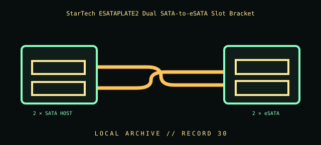

[ INDIVIDUAL COMPONENT // CABLES & ADAPTERS ]
StarTech ESATAPLATE2 Dual SATA-to-eSATA Slot Bracket
StarTech.com ESATAPLATE2 two-port SATA-to-eSATA slot-plate adapter. This entry identifies the documented model and does not claim that visually similar products share its pinout, protocol, capability, or host compatibility.

COMPATIBILITY WARNING: Verify the exact product model, host/device role, signal protocol, electrical requirements, and manual before connection. Connector fit alone does not prove compatibility.
Specifications
| Catalog subcategory | Data, peripheral, and high-speed cables |
|---|---|
| Catalog identity | StarTech.com ESATAPLATE2 two-port SATA-to-eSATA slot-plate adapter |
| Verified protocol / model information | Two internal SATA motherboard connections routed to two external eSATA receptacles on a slot plate, as identified by StarTech. It is a passive connector breakout, not a protocol converter or drive power supply. |
| Connector ends | 2 × SATA HOST → 2 × eSATA; diagram is schematic, not a pinout map. |
Physical & electrical compatibility
Requires motherboard/controller SATA ports and separately powered external drives/enclosures. Verify port support, controller hot-plug configuration, and cable routing. eSATA external connectors do not provide the device power; do not connect a live external drive unless host and OS support the procedure.
Archival & handling notes
Retain the mounting bracket screws and both internal SATA lead identifiers; record the motherboard/controller ports used. Inspect header ends and plate grounding/fit before install; avoid bracket strain against the motherboard.
Record provenance, condition, label photographs, exact full part number/revision, host system, and any test method/result. Preserve packaging and source documents with the cable when available.
Manufacturer & standards references
- StarTech — ESATAPLATE2 dual SATA to eSATA slot plateManufacturer product identity and dual-port routing.
- SATA-IO — eSATA / Serial ATA standards resourcesStandards source for SATA/eSATA signaling; the bracket itself does not provide power.
Manufacturer documentation applies to the cited model; standards references describe the protocol family. Where product revisions or device support vary, the exact manufacturer manual and host documentation take precedence.